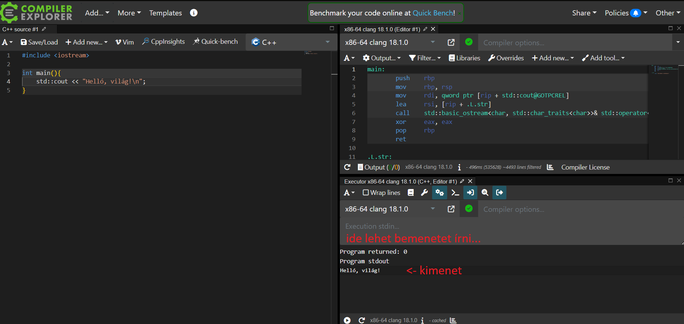
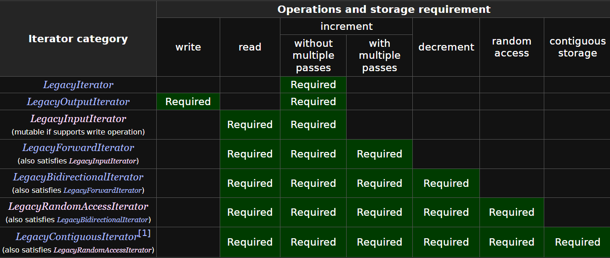

A jegyzetről
FONTOS! A C++ nyelv a népszerű nyelvek között az egyik legnehezebb, elsajátítása megfelelő figyelmet és erőbefektetést igényel. A jegyzetben minden sornak jelentése van, azokban potenciálisan olyan információ rejlik, amely később kritikus tudásként szolgálhat. Érdemes minden sort elolvasni és értelmezni a kódrészleteket. A programozás tényleges megtanulásához elengedhetetlen, hogy hallgatóként a programozásra hobbiként is tekintsünk.
A jegyzet A Programozás Alapjai 2 című tárgyhoz készült, viszont egyes esetekben kitérőket tesz, hogy az esetleges C++ nyelv iránt érdeklődő hallgatókat elmélyítse a nyelv szépségeiben.
A jegyzetben próbáltam a tananyag menetéhez alkalmazkodni, csak akkor változtattam, amikor a tananyagban esetleg érdemesebbnek láttam egyes fogalmakat hamarabb bevezetni.
A legtöbb anyaghoz találhatóak külső linkek hasznos oldalakhoz, azonban egyesek(pl. cppreference) kicsit bővebben elmagyaráznak egyes aspektusokat, mint ami a tárgyhoz szükséges.
Ezen felül fontos azt megjegyezni, hogy a tárgy C++ verzióban inkonzisztens(pl. egyes ellenőrző feladatok C++03-ra vannak állítva), néhány laboron működni fog az, ami a másikon nem. Viszont a házi feladatban elvileg C++17 verzióval fordul minden. A laborokon elvileg lehet(és Windowson ezt ajánlom!) Visual Studioban dolgozni, ami viszont C++14-nél régebbi verziókat nem támogat.
Compiler Explorer(Godbolt)
A Compiler Explorer egy weboldal, ahol mindenféle nyelven írt programok különböző fordítókkal készített kimenetét lehet megnézni. A linkre kattintva egy egyszerű setupot kapunk, amelyen a bal oldalra írt kódot a jobb oldalon optimalizálás nélküli Assemblyként láthatjuk, valamint egy "Executor" is jelen van, amely a kód futtatását szimulálja. (Ha nem érdekel az assembly, azt a tabot nyugodtan bezárhatod, telhesen független az Executor-tól.)
A jegyzetben a hosszabb/bonyolultabb kódrészletekhez csatoltam godbolt linkeket, így gyorsan csekkolható a program futása, valamint így gyorsan bele lehet piszkálni a kódba.

Inspiráció
A jegyzet inspirációt merít az infocpp(hivatalos tárgyhonlap, tananyag), CPPFTW(hallgatók által készített majdnem kész jegyzet) és a cppreference weboldal tartalmából.
Köszönöm a TCCPP Discord szerver tapasztalt(gcc közreműködők, C++ ISO tanács tagok) tagjainak az esetleges szakmai kérdések megválaszolását.
- volatile
- Mr. Σ
- Eisenwave
- dot
- DXPower
Az "Alapvető különbségek a C nyelvtől" fejezet alcímeit és tartalmát részben a CPPFTW oldal inspirálta.
Alapvető különbségek a C nyelvtől
A bool, mint nyelvi elem
https://en.cppreference.com/w/cpp/language/types#Boolean_type
A bool típus, habár a C nyelv újabb verzióiban nyelvi elemként szerepel, a Prog1 még nem tanítja. A C++ nyelvnek szerencsére része a bool típus, nem kell ehhez a legújabb verziókat használni.
bool x = true; //nem kell semmilyen include
Struktúra és typedef
A C nyelvben a struktúrák önmagukban nem, csak a struct előtaggal voltak egyéni típusnevek. Ez C++ -ban másképp van, itt a struktúra neve typedef nélkül is egyéni típusnév.
struct foo{
int a;
};
int main(){
foo f;
f.a = 5;
}
C Standard Library headerek
A C standard library header-jei a C++ nyelvben is léteznek, viszont a .h kiterjesztést elvesztették, és egy c előtagot kaptak. Pl.
#include <stdio.h> -> #include <cstdio>
Névterek(namespace)
https://en.cppreference.com/w/cpp/language/namespace
C-ben gyakori az, hogy egy név már használva van például egy header file-ban ezért bárhol, ahol ez a header include-olva van, ez a név "foglalt" lesz. Ezt sok könyvtár a név prefixelésével oldja meg, pl. SDL_Texture.
Erre a C++ -nak beépített nyelvi eleme van, ezek pedig a névterek.
#include <cstdio>
namespace foo{
void f(){
std::printf("foo");
}
namespace bar{
void f(){
std::printf("bar");
}
}
}
int main(){
foo::f();
foo::bar::f();
}
A névtereken belüli neveket a :: operátorral érhetjük el. A printf előtti std névtér a standard library névtere, ez tartalmazza az összes standard library által tartalmazott szimbólumot(függvények, struktúrák, stb.), éppen azért, hogy az stdlib által használt gyakori nevek(pl. vector) ne ütközzenek más kóddal.
Function overloading
C++ -ban ugyanazon nevű függvény többféle paramétereket vehet át.
#include <cstdio>
void foo(double x){
std::printf("%lf double", x);
}
void foo(int x){
std::printf("%d int", x);
}
int main(){
foo(5); // 5 int
foo(3.2); // 3.2 double
}
Referenciák
C-ből ismert a pointerek fogalma. Ezt sokszor arra használjuk, hogy egy függvényben a paraméterként kapott eredeti objektumot módosítsuk, vagy hogy egy másolást elkerüljünk. Erre valók C++ban a referenciák
//swap függvény C-ben
void c_swap(int* x, int* y){
int tmp = *x;
*x = *y;
*y = tmp;
}
//swap C++ -ban
void cpp_swap(int& x, int& y){
int tmp = x;
x = y;
y = tmp;
}
A referenciák konstansok, azaz egy referencia az élettartama alatt nem tud hirtelen másik objektumra mutatni.
int x = 5;
int y = 1;
int& xr = x;
xr = y; //ugyan az, mint x = y;
Gondolhatunk a referenciára úgy, mint egy 'alias' -ra (alternatív név). Megmondjuk, minek az alias-a, majd utána az eredeti változó helyett használjuk.
Fontos megjegyezni, hogy ugyan úgy mint a pointereknél, lokális változóra mutató referenciával tilos visszatérni.
A const kulcsszó
https://en.cppreference.com/w/cpp/language/cv
Most a const type qualifier-ről van szó.
A const kulcsszó a C nyelvnek is része, viszont C++ban egy sokkal fontosabb szerepe van, amivel később találkozunk még.
Jelentése nevéből adódik, egy const objektumot "nem lehet megváltoztatni". A kulcsszó mindig a tőle azonnal balra található dologra vonatkozik, kivéve ha a const az első, akkor a tőle azonnal jobbra található elemre vonatkozik.
Fontos azt megemlíteni, hogy a const nem fordításidejű konstans értéket jelöl, inkább a programozó felé jelzés. Régebben a fordítók optimalizálásra is használták, viszont ennek a jelentősége ma már elenyésző, viszont a kulcsszó használata ettől még esszenciális marad.
Pélák:
int x; // sima, változtatható egész
int const pi = 3.14; //konstans egész
const int pi = 3.14; //ugyanaz, mint az előző
const int* p = π // pointer egy konstans egészre
int const * p = π //ugyanaz, mint az előző
const int& p = pi; //referencia konstans egészre
int const& p = pi; //ugyanaz, mint az előző
//most jön a lényeg
const int* const c = π //konstans pointer konstans egészre
int const * const c = π //ugyanaz, mint az előző
int* const c = &x; // konstans pointer változtatható egészre
/*!!!---!!!*/
//az alábbi kódrészletek pedig nem működnek, mivel konstans objektumra csak pointer-to-const és reference-to-const mutathat
//mivel pi const, ezért csak pointer-to-const mutathat rá
int* const c = π
//mivel pi const, ezért csak reference-to-const referálhat rá
int& r = pi;
Null pointer
https://en.cppreference.com/w/cpp/language/nullptr
A régebbi(prog1en oktatott) C verziókban a NULL valójában a konstans 0 void* -é kasztolása. C++ban a void* -> T* konverzió nem implicit, így C++ban a null pointernek saját std::nullptr_t típusa van, és nullptr -ként hivatkozunk rá a kódban. Az std::nullptr_t típust a saját kódunkban nem fogjuk használni, viszont annyit kell tudni róla, hogy bármilyen pointer típussá és bool-ra is képes implicit konvertálódni, azaz működnek a
int* a = nullptr;
if(a) {
}
kódrészletek.
std::string
https://en.cppreference.com/w/cpp/string/basic_string
Egy egyszerű string típus dinamikus mérettel és alap elvárt string funkcionalitással.
#include <string>
/* ... */
std::string str = "foo";
std::string str2 = str;
str = str.substr(0, 1);
// ...
Scoped enum(C++11)
https://en.cppreference.com/w/cpp/language/enum
A C enum típusai nagyon furcsán viselkednek, egésszé változnak ha kicsit féloldalasan nézzük őket, pedig nem igazán erre valók. C++ban az enum class ezt oldja meg.
Definíciós szintaxisuk a C enumokhoz hasonló, viszont a scoped enum-ok nem konvertálódnak automatikusan egész számokká, valamint nem valami mágikus globális konstansként próbálnak viselkedni.
enum class Direction{
UP=0, DOWN=1, LEFT=2, RIGHT=3
};
int main(){
Direction d = Direction::UP; //typename::enumname szintaxis
int x = d; //error
}
Még egy nagyon jó tulajdonságuk, hogy megadhatjuk az underlying típusukat. Például ha tudjuk hogy max 1 bytera lesz szükségünk, akkor megmondhatjuk neki, hogy valójában egy speckó char legyen.
enum class Direction : char{
UP=0, DOWN=1, LEFT=2, RIGHT=3
};
Standard IO
Problémák a C standard IO-val
A printf és scanf fő problémája a compile time hibaellenőrzés hiánya. Nincs típusellenőrzés, így gyakran lesznek ezekkel a függvényekkel kapcsolatban problémáink. A scanf függvénynél ezen felül nem szabad elfelejteni a címképző operátort(&) sem, a printf pedig nem képes kiírni a saját típusainkat, valamint ezt megtanítani sem tudjuk neki.
C++ alternatívák
https://en.cppreference.com/w/cpp/io/cout
https://en.cppreference.com/w/cpp/io/cin
C++ban a standard input és output két fő globális objektum(std::cin és std::cout) és a C-ből shiftelő operátorokként(>> és <<) ismert szimbólumokkal lett megoldva. A standard IO használatához az iostream headerre van szükség.
Ha egy változóba szeretnénk beolvasni, majd ezt kiírni:
#include <iostream>
int main(){
int x;
std::cin >> x;
std::cout << x;
}
A beolvasásokat és kiírásokat láncolhatjuk is:
int x;
double d;
char c;
std::cin >> x >> d >> c;
std::cout << "int: " << x << " double: " << d << " char: " << c;
Ez a "szintaktika" operátorok túltöltésén(overload) alapul.
Jelenleg annyi említest teszek ezzel kapcsolatban, hogy valójában egy operator<< függvényt hívunk meg az std::cout(referencia rá) és a "kiírandó dolog" paraméterekkel, ami aztán referenciaként újra visszaadja az std::cout -ot, így tudjuk őket láncolni is.
Később azt is megtanuljuk, hogy pontosan hogyan működik az operátorok overload-olása és láncolása, valamint megtanítjuk majd a saját típusaink beolvasását és kiírását is.
Get
https://en.cppreference.com/w/cpp/io/basic_istream/get
char k = std::cin.get(); //bekérünk 1 karaktert
char k2;
std::cin.get(k2); //ugyanaz mint az előző, csak máshogy, itt out parameter van return helyett
char k3[6];
std::cin.get(k3, 5); //5 karaktert olvasunk egy 5 méretű tömbbe. Ez a függvény tesz lezáró 0-t
std::getline
https://en.cppreference.com/w/cpp/string/basic_string/getline Az std::getline függvény alapértelmezetten egy egész sort olvas be egy input streamről, viszont saját elválasztót is megadhatunk neki.
std::string line;
std::getline(std::cin, line);
std::getline(std::cin, line, ','); // ',' karakterig olvasunk
Ignore
https://en.cppreference.com/w/cpp/io/basic_istream/ignore
A bemeneti streameknek van egy ignore tagfüggvénye, amellyel eldobhatunk("ignorálhatunk") karaktereket.
std::cin.ignore(x); // x karaktert ignorál, vagy amíg eof-t nem kap
std::cin.ignore(std::numeric_limits<std::streamsize>::max()); //ignorál mindent ami a bemeneten van
std::cin.ignore(x, c); //ignorál x karakter, vagy amíg nem kap c-vel azonos karaktert
std::numeric_limits<T>::max() : adott T típusú numerikus típus maximum értékét adja vissza. (pl. std::numeric_limits<std::size_t>::max())
Pl:
#include <iostream>
#include <limits>
int main(){
int a;
int b;
std::cin >> a;
std::cin.ignore(5);
std::cin >> b;
std::cout << "a: " << a << " b: " << b << '\n';
char c1;
char c2;
std::cin >> c1;
//ignorálunk addig amíg ';' -t nem kapunk. Ignorálja a ; -t is!
std::cin.ignore(std::numeric_limits<std::streamsize>::max(), ';');
std::cin >> c2;
std::cout << "c1: '" << c1 <<"' c2: '" << c2 << "'\n";
}

Nem összekeverendő a teljesen más jelentésű std::ignore-al.
File IO
C++ -ban a file IO API-ja(az, amit a programozó lát belőle, Application Programming Interface) megegyezik a standard IO-val.
File olvasásra megnyitásához és nyilvántartásához az std::ifstream (Input Filestream) típust, írásra az std::ofstream (Output Filestream) típust használjuk.
#include <fstream>
int main(){
std::ifstream input("input.txt");
int x;
input >> x;
std::ofstream output("output.txt");
output << x;
}
Az std::ifstream és std::ofstream típusó objektumok automatikusan(ld. osztályok) bezárják a fileokat, ha scopeon kívül kerülnek, így nem szükséges a fileokat manuálisan bezárni, viszont a lehetőségünk megvan rá. (.close())
IO manipulátorok
Az IO műveletek viselkesését ún. manipulátorok segítségével változtathatjuk meg. Ezeket úgy használjuk, mintha ők maguk is input/output lennének. Pl. ha az egészeket mindenképp 7 számjeggyel szeretnénk kiírni, és 0-val kitölteni a maradék helyet.
#include <iomanip>
#include <iostream>
int main(){
int x = 356463;
std::cout << std::setw(7) << std::setfill('0') << x;
}
A manipulátorok hatóköre változó, vannak olyanok, amelyek csak a következő outputra hatnak, de vannak olyanok is, amelyek hatása "végtelen"(amíg meg nem változtatjuk).
Fontosabb mainpulátorok:
std::setw(size): megadja, hogy a kiírt számok hány karakter szélesek legyenestd::setfill(ch): a paraméterként kapott karakterrel lesz kitöltve a maradék hely, ha egy kiírt érték nem tölti ki a megadott szélességetstd::setprecision(p): a lebegőpontos számok tizedesjegyeinek pontosságát(számát) állítja be
Több IO manipulátor és egyéb kapcsolódó foszlányok itt: https://en.cppreference.com/w/cpp/io/manip
Sokszor állítunk el dolgokat egy IO streamen, viszont nem szeretnénk egyesével visszaállítani az eredeti értékeket.
Ekkor van két lehetőségünk.
Az első, hogy egy "buffer stream" segítségével összeállítunk egy stringet és ezt a stringet írjuk ki. Ehhez használjuk az std::stringstream típust: https://en.cppreference.com/w/cpp/io/basic_stringstream
https://godbolt.org/z/59YETh5dn
#include <sstream>
#include <iostream>
int main(){
std::stringstream buf;
buf << std::hex << 45678;
std::cout << buf.str();
}
A másik lehetőség az, hogy a stream beállításait(flag, precision, width) elmentjük, majd ezeket visszaállítjuk. Ez elég nagy szenvedés és nem érdemes csinálni, csak ha nagyon muszály.
https://godbolt.org/z/o1hxqvnzz
#include <sstream>
#include <iostream>
#include <iomanip>
int main(){
//most őszintén, kinek van ehhez kedve?
std::ios_base::fmtflags flags = std::cout.flags();
std::streamsize prec = std::cout.precision();
std::streamsize width = std::cout.width();
std::cout << std::hex << 465643 << std::setprecision(12) << std::setw(20) << 454.3256456436;
std::cout.flags(flags);
std::cout.precision(prec);
std::cout.width(width);
std::cout << '\n';
std::cout << 54;
}
Kivételek, hibakezelés
Hibakezelés C-ben
double oszt(double x, double y){
if(y == 0){
//mit csináljunk? exit, vagy csak írjunk ki valamit?
}else{
return x/y;
}
}
C++ -ban
https://en.cppreference.com/w/cpp/language/exceptions
A C++ egy fontos nyelvi elemei a kivételek(exception). Ezek segítségével kivételes esetekkor dobhatunk egy "hibát", amit a program elkaphat. Ez egy megosztó feature a közösségben(ld. "hidden control flow"), viszont sokszor hasznos lehet. Például nullával való osztás esetén valószínűleg nem nekünk, hanem a hívó kódnak kéne kezelnie a hibát.
Kivételt a throw kulcsszóval dobhatunk, valamint a try kulcsszóval nyitott scope-ban dobott kivételeket a catch kulcsszóval kaphatunk el.
Kivételként bármilyen típust dobhatunk(int, const char*, stb.), viszont érdemes az std::exception és a belőle leszármazó(később) típusú objekutmokat dobni. Ezekhez a típusokhoz az stdexcept nevű header-re van szükség.
https://en.cppreference.com/w/cpp/error/exception
https://godbolt.org/z/axWfMGxxK
#include <stdexcept>
#include <iostream>
double oszt(double x, double y){
if(y == 0){
throw std::runtime_error("0-val valo osztas!");
/*
lehetne:
throw "0-val valo osztas";
vagy
throw 0;
stb. viszont ezeket nem szép dobni.
*/
}else{
return x/y;
}
}
int main(){
try{
oszt(5.0, 0.0);
}catch(const std::exception& e){ //konstans referenciaként kapjuk el az exception-t(ezt mindig!)
std::cout << e.what(); //.what() : visszaadja az exception "üzenetét"
//egyéb hibakezelő kód...
}
}
Később lesz szó arról, hogy hogyan készíthetünk saját kivétel típusokat amelyek az std::exception -ből származnak.
Dinamikus memóriakezelés
C dinamikus memóriakezelés
A C dinamikus memóriakezelése a kőkorszakban jár. Megkérdezi hány bájtnyi memóriára van szükségünk, majd visszadob rá egy pointert.
C++ memóriakezelés
A C++ malloc függvényét a new operátor(igen, ezek operátorok), a free függvényt pedig a delete és delete[] operátor váltotta fel.
A new egy intelligens eszköz. Nem memóriamennyiséget, hanem egy típust és opcionálisan egy tömbméretet kap.
Pl.
int* x = new int; //egy darab dinamikusan foglalt int
int* tomb = new int[5]; //egy dinamikusan foglalt 5 méretű tömb
std::size_t tombMeret; //std::size_t : általában memóriafoglalások méretét vagy indexeket tároló előjel nélküli egész
std::cin >> tombMeret;
int* dinTomb = new int[tombMeret];
A delete operátor a new operátorral lefoglalt memóriát szabadítja fel. Ha tömböt szabadítunk fel, akkor a delete[] operátort kell használni.
Az előbbi példa foglalások felszabadítása:
delete x;
delete[] tomb;
delete[] dinTomb;
Variable Length Array
Az alábbi kódrészlet az ISO C++ Standard szerint nem szabványos C++, a GCC és Clang fordítók compiler extensionként engedélyezik. VLA-t ne használjunk, hiszen így a stacken szükséges memória mérete ismeretlen lesz.
https://godbolt.org/z/93xxj5WPM
int x;
std::cin >> x;
int a[x];
A non-standard extension-ök kikapcsolása:
- GCC/Clang:
-pedantic-errorsflag - MSVC:
/fpermissive-flag
Sablonok (template)
Sablon alapok
A C++ egyik legnagyobb előnye a C-vel szemben a generikus programozási lehetőségekben rejlik. A jegyzetben már szerepelt az alábbi függvény:
https://godbolt.org/z/86ae5adTr
//swap C++ -ban
void cpp_swap(int& x, int& y){
int tmp = x;
x = y;
y = tmp;
}
Ezt a függvényt szeretnénk megírni, hogy működjön mindenféle típusra. Természetesen ez lehetetlen küldetésnek tűnhet, azonban a C++ templatek fő felhasználási módja éppen ez.
https://godbolt.org/z/rrzMjYvK7
template <typename T> //sablondeklaráció, sablonparaméterek(itt T) felsorolása
void cpp_swap(T& x, T&y){ //cpp_swap<T> függvénysablon
T tmp = x;
x = y;
y = tmp;
}
A fent látható cpp_swap -ot függvénysablonnak hívjuk. Önmagában nem függvény, ahhoz "példányosítani" kell. Ez a gyakorlatban annyit jelent, hogy használjuk.
pl.
int main(){
int x = 6;
int y = 2;
// cpp_swap<T> függvénysablon példányosítása T=int sablonparaméterekkel
cpp_swap<int>(x, y); //<int> <- sablonparaméter megadása
std::cout << x << ' ' << y << '\n';
float a = 7.3;
float b = 1.2;
cpp_swap<float>(a, b);
std::cout << a << ' ' << b;
}
Amikor egy sablont példányosítunk adott sablonparaméterekkel, olyankor valójában fordításidőben kód generálódik az adott sablonparaméterek behelyettesítésével. Pl.
cpp_swap<int>(x, y); //cpp_swap<T> függvénysablon példányosítása T=int sablonparaméterekkel
esetén a
void cpp_swap(int& x, int& y){
int tmp = x;
x = y;
y = tmp;
}
kód generálódik. A T helyére mindenhol int kerül. Ezt a generált kódot nekük természetesen nem kell látnunk, vagy foglalkoznunk vele.
A sablonparamétereket a fordító néha le tudja vezetni a kapott függvényparaméterekből(template parameter deduction). Például:
double a = 5.2;
double b = 1.2;
cpp_swap(a, b); //nem kell megadni, hogy double típus, mivel a és b double típusúak
cpp_swap<double>(a, x); //meg kell adni, hogy double típus, mivel a és x különböző típusúak, így a fordító nem tud dönteni
A sablonok(template) használata nagyon elterjedt a C++ programozásban, ezért néhány standard library implementáció gyakran Standard Template Library(STL) -nek nevezi magát(pl. MSVC STL, EA Games STL).
Duck typing
A sablonokkal felmerül egy újabb kérdés: milyen típusokat fogadunk el? A válasz erre egyszerű: mindent, amivel a függvény kódja lefordul.
Ezt "duck typing" -nak hívjuk: "If it walks like a duck and it quacks like a duck, then it must be a duck"
Például nézzünk meg egy függvényt, ami megmondja két valamiről, hogy az első valami nagyobb-e, mint a második valami.
template<typename T>
bool nagyobbe(T elso, T masodik){
return elso > masodik;
}
Milyen típusokra működik ez a függvény? Hát azokra, amelyek ezeket a feltételeket teljesítik:
- lemásolhatók (hiszen másolatként vesszük át őket)
- összehasonlíthatók a
>operátorral
Vegyük észre: ezek pontosan azok a feltételek, amelyek ahhoz kellenek, hogy a kódban az adott típust T helyére beillesztve a kód leforduljon.
A sablonok korlátozására léteznek további technikák(SFINAE, concept), azonban ezek messze túlmutatnak a tárgy anyagán.
Nem-típus sablonparaméterek, nem-függvény sablonok
Sablonparaméterként átadható nem csak típus, hanem gyakorlatilag bármilyen más objektum is. Pl. a standard library egy típusa az std::array, amely első függvényparamétere a tömbben tárolt típus, második függvényparamétere egy pozitív egész szám, a tömb mérete.
std::array<int, 5> tomb; //5 méretű int-eket tároló tömb
Ezt kódban a következőként "replikálhatjuk":
template<typename T, std::size_t siz>
struct array{ // array<T, siz> "osztálysablon"(osztályok később)
T belso_tomb[siz];
//array implementáció...
};
template <int N>
void print_template_int(){
std::cout << N << '\n';
}
Fontos azt megjegyezni, hogy a sablonok fordításidőben példanyosodnak, szóval minden sablonparaméternek fordításidőben konstansnak kell lennie. pl.
print_template_int<5>(); //ok
int x = 5;
print_template_int<x>(); //hiba, x nem fordításidejű konstans(const int x sem oldaná meg)
Részleges specializáció
Tegyük fel, hogy szeretnénk ha egy adott sablon egy speciális módon működjön, ha egy adott típust kap. Például ha a swap függvényünk int-et kap, akkor írja ki, hogy "int", különben működjön normális módon.
https://godbolt.org/z/zj1bfe5s9
template <typename T>
void cpp_swap(T& x, T&y){
T tmp = x;
x = y;
y = tmp;
}
template <>
void cpp_swap<int>(int& x, int&y){ //specializáció a T=int esetre
std::cout << "int ";
int tmp = x;
x = y;
y = tmp;
}
Osztályok, objektumok
most ugrik a majom a vízbe
Ez egy viszonylag hosszú fejezet, azonban a nyelv megértéséhez esszenciális!
Osztály, objektum
A C nyelvben már megismerhettük a struct kulcsszót, ami azonos dologhoz tartozó adatokat tárolt. Valószínűleg sok olyan függvényt írtunk ekkor, hogy
struct foo {};
void foo_szamol(struct foo f) {}
és társai. Jó lenne, ha a foo_szamol függvényt valahogyan a foo struktúrához köthetnénk.
Az osztályok ezt a problémát oldják meg, valamint néhány nagyon hasznos utility-t adnak a programozó kezébe.
Egy osztályt a class vagy a struct kulcsszóval(különbség később) tudunk definiálni, typedef használatára egyáltalán nincs szükség.
Egy osztályból "példányokat" hozhatunk létre, ez gyakorlatilag azt jelenti, hogy az adott osztály típusú változót hozunk létre a C struktúrákhoz hasonlóan.
class Foo {};
int main(){
Foo f;
}
Publikus és privát elérés
Egy osztály tartalmazhat "member"-eket(tagokat), amelyeknek különböző láthatóságai lehetnek.
Ezt a public, private és protected (később) szavakkal állíthatjuk be. Ezeket a kulcsszavakat access specifier-nek hívjuk.
A privát tagokat csak az osztályon belülről, a public-okat kívülről is elérhetjük. Egy osztályban alapból minden private, amíg ezt meg nem változtatjuk.
https://godbolt.org/z/vYb75s41a
class Foo {
public: //ez után a következő access-specifier -ig minden public.
int x;
private: //ez után a következő access-specifier -ig minden private.
double y;
};
int main(){
Foo f;
f.x = 5;
f.y = 2.3; //nem ok, y private
Tagfüggvények (member functions)
Az osztályok egyik "breaktrough" feature-je, hogy függvényeket tartalmazhatnak, amelyek az osztály által tárolt állapoton(state) operálnak.
Egy tagváltozó lehet const, ami azt jelenti, hogy nem változtatja meg az objektum állapotát, így const objektumon is működik.
FONTOS egy tagfüggvény túltölthető az alapján, hogy const -e, vagy nem, így a const qualifier része a függvény fejlécének! (signature)
A this pointer egy osztályon belül az adott példányra vonatkozik, viszont kiírni csak akkor kell, ha egy tagfüggvény paramétere miatt egy név nem egyértelmű.
A tagfüggvények gyakorlatilag speciális függvények, amelyek első paramétere a rejtett this pointer.
A szintaxis a következő:
https://godbolt.org/z/E3YP9scPq
class Square{
private:
double side_length; //privát, írunk rá publikus set és get függvényt.
public:
//"Setter" függvény, nagyon hasznos ha nem triviális egy érték beállítása(pl. itt side_length > 0 check miatt)
void set_side_length(double side_length){
if(side_length <= 0) {
throw std::runtime_error("side length <= 0 is not allowed");
}
//this->side_length: az adott példány oldalhossza,
//side_length: a tagfüggvény paramétere
this->side_length = side_length;
}
double get_side_length() const { //const, mivel nem változtatja a példányt.
return side_length; //nem kell this-> mivel nincs név konfliktus.
}
double calculate_area() const { //const, mivel csak számol, ez sem változtat semmit
return side_length * side_length;
}
};
Tagfüggvényeket a . operátorral érhetünk el:
int main(){
Square square;
square.set_side_length(2.5);
std::cout << square.calculate_area();
}
Felfedezhetjük azonban azt a problémát, hogy egy const négyzet objektummal sok mindent nem tudunk kezdeni, ugyanis annak nem változtathatjuk meg az oldalhosszát, mután az objektum "elkészült". Ezt a problémát később, a konstruktorral oldjuk meg.
Konstruktor, destruktor és RAII
Most jön talán a C++ legfontosabb része. A RAII(Resource Acquisition Is Initialization), de hívhatjuk "Scope Based Resource Management-nek is, módszer szerint egy objektum élettartama kezdetén(construction) átveszi és lefoglalja a számára szükséges erőforrásokat(memória, adatbázishoz csatlakozás, stb.) és élettartama végén(destruction) felszabadítja, bezárja ezeket az erőforrásokat.
A C++ nyelvben a "konstruktor"(constructor, ctor) speciális tagfüggvény fut az objektum élettartamának kezdetekor, és a destruktor fut az élettartam legvégén. Erre nézzünk egy egyszerű példát.
A konstruktornak és destruktornak nincs visszatérési értéke. A konstruktor függvény neve mindig megegyezik az osztály nevével, a destruktor neve pedig ~osztaly_neve.
Objektum létrehozása alatt azt értjük, amikor egy lokális változót definiálunk az adott osztálytípussal, vagy a new operátorral dinamikus élettartamú objektumot hozunk létre.
Lokális változó élettartama a definiálásától a scope végéig, dinamikus élettartamú objektum élettartama a lefoglalásától(new) a felszabadításáig(delete) tart.
class Foo{
Foo() {
std::cout << "Foo ctor\n";
}
~Foo() {
std::cout << "Foo dtor\n";
}
};
int main(){
Foo f; //foo ctor lefut
/*
...
*/
return 0; //foo dtor lefut
}
Azt a konstruktort, amely paraméter nélkül hívható, defualt konstruktornak nevezzük. Ha egy osztályban minden tagváltozónak van default konstruktora, és mi nem írtunk külön konstruktort, akkor az osztálynak generálódik default konstruktor.
Egy osztályból csak akkor hozható létre (C értelemben vett) tömb, ha annak van default konstruktora.
A konstruktor arra való, hogy egy példány alap értékeit beállítsuk, viszont a konstruktorba írt kód valójában az objektum létrejötte után fut, így pl. konstans tagváltozókat, vagy konstans objektum tagváltozóit nem tudunk beállítani itt, ezért a tagváltozók inicializálását általában a "member initialization list" -en tesszük meg. Ennek kicsit furcsa szintaxisa van: classname() : member1(value1), member2(value2)
Vegyük újra példának a Square osztályt.
https://godbolt.org/z/hK479jPbY
class Square{
private:
double side_length; //privát, írunk rá publikus set és get függvényt.
std::string name; //std::string : egy dinamikusan növő karakter tömb, modern nyelvektől elvárt string típus
public:
// : side_length(side_length) -> a side_length nevű tagváltozót inicializáljuk a side_length nevű paraméterrel
// vesszővel választjuk el a tagokat
Square(double side_length, const std::string& name) : side_length(side_length), name(name) {
} //így már lehet const Square is használható objektum
//"Setter" függvény, nagyon hasznos ha nem triviális egy érték beállítása(pl. itt side_length > 0 check miatt)
void set_side_length(double side_length){
if(side_length <= 0) {
throw std::runtime_error("side length <= 0 is not allowed");
}
this->side_length = side_length; //this->side_length: az adott példány oldalhossza, side_length: a tagfüggvény paramétere
}
double get_side_length() const { //const, mivel nem változtatja a példányt.
return side_length; //nem kell this-> mivel nincs név konfliktus.
}
};
int main(){
Square square(5.3, "foo"); //konstruktor hívás
Square square; //ez most nem működik, mert Square-nek nincs default konstruktora.
}
Osztálysablonok
Mint ahogyan a függvények, az osztályokhoz is lehet sablonokat készítnei. pl.
template <typename T>
class Foo{
public:
T x;
};
Nagyon hasonlóan működik a függvényparaméterekhez, szimpla kódgenerálásról van szó.
Gyakori félreértések, static tagfüggvények
adatbázisok referencia következik Amikor egy osztályt hozunk létre, azzal még nem jön létre objektum. Az osztály egy tervrajz, egy valami leírása. Ez az objektumorientált programozás alapelve. A való világ(vagy esetleg kitalált világ) dolgairól készült tervrajzokból hozunk létre példányokat. Egy osztály egy példányát nevezzük általában objektumnak.
Pl.
class foo{};
int main(){
foo f; // f a foo osztály egy példánya
}
Amikor egy osztályban egy tagváltozót érünk el, az az adott példány tagváltozójára vonatkozik. Emlékezzünk vissza, a tagváltozók elérése (még ha implicit módon is) a this pointeren keresztül történik, azaz a példányunkra mutató pointeren keresztül.
Vannak azonban esetek amikor valamilyen állapotot nem egy példányhoz, hanem az osztályhoz szeretnénk kötni. Nos erre való a static kulcsszó. Egy statikus tagváltozó nem a példányokhoz, hanem az osztályhoz tartozik, a statikus tagfüggvény ugyanígy az osztályhoz tartozik. Természetesen ez azt is jelenti, hogy statikus tagváltozót/tagfüggvényt nem érhetünk el példányon keresztül, valamint non static tagváltozókat és tagfüggvényeket nem érhetünk el statikus tagfüggvényekből.
Statikus tagváltozókat a :: operátorral érhetünk el:
foo::bar();
class foo{
public:
static void s_bar() {}
void m_bar() {}
int s_x;
int m_x;
};
int main(){
foo f;
f.m_bar(); //ok
f.m_x = 4; //ok
f.s_bar; //nem ok
foo::s_bar(); //ok
}
Egyetlen felelősség elve
"A module should be responsible to one, and only one, actor."
Nos ez egy kicsit furcsa lehet, szóval vegyünk egy érthetőbb megfogalmazást:
Egy osztálynak egyetlen felelősséget kell lefednie, viszont azt teljes mértékben.
Pl. A string osztályunk kezeli a dinamikus karaktertömböt, viszont azzal nem foglalkozik, hogy a karaktereit egyesével hogy írjuk ki.
Komolyabb RAII példa
Most pedig nézzünk egy komolyabb RAII példát. A tervünk egy dinamikusan növő tömb osztálysablon létrehozása ami bármilyen lemásolható típust képes tárolni. Ezt a példát sokáig fogjuk használni.
Szóval szükségünk lesz egy typename T sablonparaméterre, egy pointerre, ami a tömbre mutat, valamint tárolni kell a tömb méretét
#include <cstdint>
template <typename T>
class DinTomb{
T* tomb; //pointer a dinamikus tömbre
std::size_t meret; //a dinamikus tömb mérete
public:
/**
* @brief Default konstruktor, mindent 0-ra inicializál
*/
DinTomb() : tomb(nullptr), meret(0) {}
/**
* @brief hozzáad egy új elemet a tömb végéhez. Nagyon hasonlít a C-ben megismert algoritmushoz, csak malloc-free helyett new-delete[] van
* @param elem az elem amit hozzáadunk(lemásolható kell, hogy legyen)
*/
void push_back(const T& elem) {
T* uj_tomb = new T[meret + 1];
for(std::size_t i = 0; i < meret; ++i){
uj_tomb[i] = tomb[i];
}
uj_tomb[meret] = elem;
delete[] tomb; // delete[], mert tömböt szabadítunk fel.
tomb = uj_tomb;
++meret;
}
std::size_t size() const { return meret; }
/**
* @brief indexelő függvény
* @param idx
* @return referencia az adott indexen lévő elemre
* @throw std::out_of_range, ha túlindexelés történik
*/
T& at(std::size_t idx) {
if(idx >= meret) {
throw std::out_of_range("Tomb tulindexelve!");
}
return tomb[idx];
}
//ua. mint az előbb, csak konstans verzió
const T& at(std::size_t idx) const {
if(idx >= meret) {
throw std::out_of_range("Tomb tulindexelve!");
}
return tomb[idx];
}
~DinTomb() {
delete[] tomb; //destruktor felszabadítja a lefoglalt memóriát
}
};
int main(){
DinTomb<double> tomb; //valos szamokat tartalmazo dinamikus tomb
tomb.push_back(4.3);
tomb.push_back(3.2);
tomb.at(0) = 5.8; //függvény az egyenlőség bal oldalán, mivel referenciát ad vissza!
return 0; // nem kell semmi manuális memóriakezelés, mert a destruktor automatikusan felszabadítja amit kell, mert egyszer megírtuk
}
Nos igen, ez a RAII lényege. Nem kell manuálisan sehol delete és new -t írnunk, ha szépen becsomagoltuk a memóriakezelést egy osztályba. Az erőforráskezelést elabsztraktáltuk a felsőbb szintű kód elől, így ezt a tömb osztályt használva már nem kell a memóriakezeléssel foglalkoznunk.
Jó RAII példák a már megismert filestream osztályok. A konstruktorukban megnyitják a filet(elkérik a file handle-t az OS-től), majd a destruktorukban automatikusan bezárják a file-t.
Objektumok másolása
Tegyük fel, hogy a tömbünkből másolatot szeretnénk csinálni. Ez valójában nem más, mint egy tömbből egy új tömböt csinálunk. Azt a konstruktort, amely egy T típusú objektumból T típusú objektumot készít másoló konstruktor(copy constructor)-nak nevezzük.
A copy constructor valójában azt mondja meg, hogyan is kéne lemásolni egy objektumot. Ez sok esetben triviális, pl.
class foo{
public:
int x;
float y;
double t;
};
Ha egy osztálynak minden tagváltozója lemásolható(van copy constructora, vagy pl. primitív típus), akkor lesz automatikusan generált copy constructora is.
A copy constructor paramétereként const T& -et vesz át. Persze, hiszen a másolandó objektumot nem változtatjuk és a nem referenciaként átvételhet(lemásolásához) copy constructorra lenne szükség.
Ha például az osztályunk egy dinamikusan növő tömböt kezel, nem másolhatjuk le egyszerűen a tömbre mutató pointert, hanem a tömböt elemenként le kell másolni(deep copy).
Ennek oka az, hogy a pointer lemásolásával(shallow copy, ez a default) az egyik tömb destruktora felszabadítja mindkét tömböt. https://en.wikipedia.org/wiki/Object_copying
FONTOS! Néhány olvasó esetleg ismerheti a memcpy függvényt. C++ objektumokat memcpy-vel(és std::memcpy-vel) másolni óriási hiba, mivel ilyenkor nem hívódnak meg az objektumok másoló konstruktorai!
template <typename T>
class DinTomb{
T* tomb; //pointer a dinamikus tömbre
std::size_t meret; //a dinamikus tömb mérete
public:
/**
* @brief Default konstruktor, mindent 0-ra inicializál
*/
DinTomb() : tomb(nullptr), meret(0) {}
/**
* @brief Másoló konstruktor
* @param other a másik tömb amit másolunk
*/
DinTomb(const DinTomb& other) : tomb(other.tomb != nullptr ? new T[other.meret] : nullptr), meret(other.meret) {
// ^ ha nullptr a másik tömb(vagy 0 a mérete), akkor nem foglalunk 0 méretű tömböt(nem is lehetne...)
for(std::size_t i = 0; i < other.meret; ++i){
tomb[i] = other.tomb[i];
}
}
~DinTomb() {
delete[] tomb; //destruktor felszabadítja a lefoglalt memóriát
}
};
class vs struct
A struct keyword C++ -ban gyakorlatilag egy alternatíva osztályok definiálására. A class -tól annyiban különbözik, hogy private helyett alapértelmezetten minden public benne(C kompatibilitás miatt). Az, hogy valaki class-t vagy struct-ot használ, preferencia.
Osztályok tagfüggvényei többmodulos programokban
Ha egy osztálynak saját header és cpp file-t dezignálunk, akkor azt a következő szintaxissal tehetjük meg:
foo.hpp (a .hpp kiterjesztés gyakori c++ header fileokhoz, de természetesen a .h ugyanígy gyakori)
class foo{
int x;
static int y;
public:
foo(int x);
void set_x(int x);
int get_x() const;
static void something();
template <typename T>
void print_with_x(T thing) const {
std::cout << x << ' ' << thing;
}
};
FONTOS! A template definíciókat (explicit specializációkat kivéve) header fileokban kell megírni!
A .cpp fileban a returntype classname::functionname(params...) szintaktikát használjuk.
Statikus tagváltozókat itt kell definiálni, itt a type classname::variablename = somevalue; szintaktikát használjuk. Osztálydefiníción kívül a static mást jelent, így kiírni nagy hiba.
foo.cpp
int foo::y = 1; //statikus tagváltozó definíciója
foo::foo(int x) : x(x) {} //konstruktor definíciója
void foo::set_x(int x){
this->x = x;
}
int foo::get_x() const { //fontos! a const része a függvény fejécének(signature), itt is ki kell írni.
return x;
}
void foo::something(){
y*=2;
}
std::initializer_list
https://en.cppreference.com/w/cpp/utility/initializer_list
Ha szeretnénk a tömbünknek egy egyszerű inicializálási módszert adni, akkor átvehetünk egy std::initializer_list típusú objektumot konstruktor paraméterként.
Az std::initializer_list egy read-only "view", azaz módosítani nem tudjuk, viszont másolni tudunk belőle. Nincs sem at() tagfüggvénye, sem indexelő operátora, csak range-for ciklussal tudunk végigiterálni rajta.
template <typename T>
class DinTomb{
T* tomb; //pointer a dinamikus tömbre
std::size_t meret; //a dinamikus tömb mérete
public:
/**
* @brief Default konstruktor, mindent 0-ra inicializál
*/
DinTomb() : tomb(nullptr), meret(0) {}
/**
* @brief initializer list konstruktor
* @param init
*/
DinTomb(std::initializer_list<T> init) : tomb(new T[init.size()]), meret(init.size()) {
std::size_t i = 0;
for(const T& elem : init) {
tomb[i] = elem;
++i;
}
}
};
int main(){
DinTomb<int> tomb = {1, 2, 3, 4};
}
Operator overloading
Mik az operátorok valójában?
Az operátorok valójában csak speciális függvények. Ez azt jelenti, hogy ugyanúgy bánhatunk velük, habár van némi megkötés, azonban legtöbbször ezek nem fognak az utunkban állni.
Operátorok és osztályok
Ha egy operátor az adott osztály típust veszi át baloldali paraméterként, akkor az operátort az osztályon belül tagfüggvényként kezelhetjük. Ekkor valójában egy paramétert adunk neki, ami a jobb oldali operandus. A bal oldali operandusa implicit a this pointer lesz.
Szeretnénk, hogy a tömbünkhöz a += operátorral is lehessen új elemet hozzáadni. Ehhez túl kell töltenünk += operátort.
A += operátorra "függvényként" az operator+= kifejezéssel hivatkozhatunk.
Nézzünk egy példát:
class DinTomb{
/*
...
*/
void operator+=(const T& elem){
push_back(elem); //delegáljuk a beillesztést a push_back függvénynek, nem duplikálunk kódot.
}
};
int main(){
DinTomb tomb;
tomb += 5.2; // értelmezzük: tomb.operator+=(5.2) -> operator+=(&tomb, 5.2)
return 0;
}
Friend
Most szeretnénk, ha a tömbünket ki is lehetne írni. Viszont ezzel van egy kis gond. Azt, hogy hova írjuk ki a tömböt(stdout, file, stb.) balértékként veszi át az operator<< (stream insertion operator), ezért ezt az osztályon kívük kell túltölteni.
A friend kulcsszó használatával az osztályon belül deklaráljuk a függvényt, ezzel "megengedjuk" neki, hogy a privát tagokat is lássa. Eztunán az osztályon kívül definiáljuk.
#include <iostream>
class DinTomb{
/*
...
*/
template<typename K>
friend std::ostream& operator<<(std::ostream& out, const DinTomb<K>& dtomb);
};
template<typename K>
std::ostream& operator<<(std::ostream& out, const DinTomb<K>& dtomb){
for(std::size_t i = 0; i < dtomb.meret; ++i){
out << dtomb.tomb[i] << ' ';
}
return out;
}
int main(){
DinTomb tomb;
tomb += 5.2; // értelmezzük: tomb.operator+=(5.2) -> operator+=(&tomb, 5.2)
tomb += 2.3;
tomb.push_back(8.7);
std::cout << tomb; //értsd: operator<<(std::cout, tomb);
return 0;
}
Ha az operator<<-t streamre való kiírásra használjuk, akkor mindig std::ostream& -et ad vissza és vesz át bal operandusként, valamint visszaadja a bal operandusát, így láncolhatóvá teszi az operátort. (std::cout << a << b << c;)
Természetesen ezt a példát friend nélkül is meg lehet oldani, azonban ez nem mindig van így.
Copy assignment(értékadó operátor)
Vannak olyan esetek, amikor már egy kész objektumnak akarunk új értéket adni. Pl.
tomb<int> tomb1;
tomb1.push_back(5);
tomb<int> tomb2;
tomb2.push_back(1);
tomb1 = tomb2;
Ilyen esetekben egy értékadó operátor(copy assignment operator) hívásról beszélünk.
A másoló konstruktor testvére a copy assignment(értékadó) operator. A copy constructorhoz hasonlóan const T& -ként veszi át a másolandó objektumot és a default is generálódik belőle.
Fontos, hogy a copy assignment operátor nem új objektumot hoz létre így az előzőleg használt erőforrásokat fel kell szabadítani.
template <typename T>
class DinTomb{
T* tomb;
std::size_t meret;
public:
/**
* @brief Default konstruktor, mindent 0-ra inicializál
*/
DinTomb() : tomb(nullptr), meret(0) {}
/**
* @brief Másoló konstruktor
* @param other a másik tömb amit másolunk
*/
DinTomb(const DinTomb& other) : tomb(other.tomb != nullptr ? new T[other.meret] : nullptr), meret(other.meret) {
// ^ ha nullptr a másik tömb(vagy 0 a mérete), akkor nem foglalunk 0 méretű tömböt(nem is lehetne...)
for(std::size_t i = 0; i < other.meret; ++i){
tomb[i] = other.tomb[i];
}
}
/**
* @brief Értékadó operátor
* @param other a másik tömb amit másolunk
* @return referencia a tömbre aminek értéket adtunk
*/
DinTomb& operator=(const DinTomb& other){
if(this == &other) { //ha önmagát kapja paraméterül akkor nincs semmi teendő, ne vágjuk magunk alatt a fát
return *this; // *this -> this pointer, *this referencia(az objektumra amin a hívás történt)
}
delete[] tomb;
tomb = new T[other.meret];
meret = other.meret;
for(std::size_t i = 0; i < other.meret; ++i) {
tomb[i] = other.tomb[i];
}
return *this;
}
~DinTomb() {
delete[] tomb;
}
std::size_t size() const;
void push_back(const T& elem);
T& at(std::size_t idx);
T& at(std::size_t idx) const;
};
int main(){
}
Rule of 0/3
https://en.cppreference.com/w/cpp/language/rule_of_three
Rule of 3: Ha egy osztálynak szüksége van nem compiler-default destruktorra, másoló konstruktorra vagy copy assignment operátorra akkor majdnem biztosan szüksége van mindháromra.
advanced
Rule of 0: Azok az osztályok, amelyeknek nem compiler-default destructora, copy constructora, copy assignment operátora van, azok valamilyen explicit erőforrás-birtoklást valósítanak meg. (https://en.cppreference.com/w/cpp/language/rule_of_three). Ettől eltérő osztályoknak ne legyen nem compiler-default destruktora, copy constructora vagy copy assignment operátora.
Néhány kötöttség
Operátor túltöltéssel nem változtatható meg:
- precedencia
- asszocivitás
Ezen felül egyes operátoroknak csak kötött számú paramétere lehet.
A logikai(|| és &&) operátorok túltöltése esetén azok elvesztik a short-circuit tulajdonságukat.
Összehasonlító operátorok
Természetesen mindenféle más operátorokat, pl összehasonlító, ennek negáltja, nagyobb, kisebb, stb. is overloadolhatunk.
Pl. a tömbjeink összehasonlítása:
template <typename T>
class DinTomb{
T* tomb; //pointer a dinamikus tömbre
std::size_t meret; //a dinamikus tömb mérete
public:
//...
bool operator==(const DinTomb& other) {
if(meret != other.meret) {
return false;
}
for(std::size_t i = 0; i < meret; ++i) {
if(tomb[i] != other.tomb[i]) {
return false;
}
}
return true;
}
bool operator !=(const DinTomb& other) {
return !(*this == other);
}
};
Pl. indexelő operátor:
template <typename T>
class DinTomb{
T* tomb; //pointer a dinamikus tömbre
std::size_t meret; //a dinamikus tömb mérete
public:
//...
T& at(std::size_t idx);
const T& at(std::size_t idx);
T& operator[](std::size_t idx){
return at(idx); //delegáljuk a feladatot a már implementált at() tagfüggvénynek
}
const T& operator[](std::size_t idx) const{
return at(idx);
}
};
Objektumorientált idióma
Senkit sem szeretnék a sablonszöveggel untatni, ha szép és kerek leírást keresünk arra itt a wikipédia.
A lényeg
Az objektumorientált programozás alapja, hogy minden dolog ami a programunkban létezik egy objektum.
Encapsulation (Egységbe zárás)
Az objektumok valamilyen blueprintek(C++ban classok) példányai. Az osztályok valamilyen állapotot és az azokon elvégezhető műveleteket írják le(tagváltozó ~ állapot, tagfüggvény ~ művelet).
Inheritance (öröklődés)
Van olyan eset, amikor egy adott dolog egyben egy másik dolog, csak kicsit kiegészítve, megváltoztatva. Pl. a Hallgató egy egyetemi polgár, viszont képes vizsgát felvenni és van kreditindexe.
Ekkor az egyetemi polgár a "base class" a hallgató pedig a "subclass" nevet kapja.
Polymorphism
Kéz a kézben jár a leszármaztatással. A fő lényege, hogy egy base class -ra mutató dolog kaphat subclass objektumot, és ezen a mutatón keresztül való viselkedés a subclass viselkedését mutatja.
Abstraction
A legtöbb esetben nem érdekel minket, hogy egy adott függvény vagy típus pontosan hogy működik, csak az, hogy mit csinál. Pl. az std::string push_back() tagfüggvénye beilleszt egy karaktert a sztring végére, de az hogy ezt hogy tesz az az átlag programozó számára(a típus felhasználója) nem érdekes.
Ezt az elvet a jegyzet is alkalmazni fogja, nem lesznek definiálva tagfüggvények, ha azok implementációja jelentéktelen.
Inheritance
A leszármazás szintaktikája viszonylag egyszerű:
class polgar{
public:
std::string name;
std::string neptun;
std::string get_decorated_name() const {
return name + std::string(" ") + neptun;
}
};
class hallgato : public polgar {
public:
double calculate_kreditindex();
std::vector<Targy> targyak;
};
Egy adott leszármazott példány memóriaképét ekkor valahogy így kell elképzelni:

Egyszerre több osztályból is le lehet származni, valamint leszármazottból is lehet tovább származtatni:
class A {};
class B {};
class C : public A, public B {}
class D : public A {};
class E : public D {};
Polimorfizmus
Ha hallgato a polgar leszármazottja, akkor polgar -ra mutató pointerek már képesek hallgato -ra mutatni, valamit polgar referencia tud hallgato objektumot alias-olni.
FONTOS! Az inverz nem igaz.
hallgato* h = new polgar;
hiszen itt a h egy olyan objektumra mutat amiben nincs meg a teljes hallgato rész.
FONTOS!
polgar típusú változóban hallgato objektumot tárolni és fordítva hiba! polgar típusú változóba halgato típusú objektumot rakva az objektum hallgató része levágódik és csak a polgar része marad meg. Ezt object slicing-nak hívjuk.
Protected tagok
A private tagok nem láthatók a leszármazottakból sem. A protected tagok a leszármazottból látszanak, az osztályon kívülről viszont nem.
Inheritance access specifiers
Mint ahogyan tagokból, leszármazásból is létezik publikus, protected és private.
class Base {};
class A : public Base {};
class B : protected Base {};
class C : private Base {};
Ezt a következőképp kell érteni:
public: a subclass és a külső kód is tud a leszármazásról, a leszármazotton keresztül a subclass és a külső kód is eléri a base class public tagjait, a private és protected tagokat viszont nem
protected: csak a subclass tud a leszármazásról, a leszármazotton keresztül csak a subclass éri el a base class public tagjait, a külső kód viszont egyáltalán nem éri el a base class tagjait
private: a subclass sem tud a leszármazásról, a leszármazotton keresztül nem érhetőek el a base class tagjai.
A struct-al definiált osztályoknál a leszármazásnál is public a default, míg a class-al definiáltaknál private.
Gyakori kérdés: hogyan alakul a publikus, protected és privát tagok láthatósága publikus, protected és privát öröklés esetén? ... megoldását az olvasóra bízom
Virtuális tagfüggvények
Tegyük fel, hogy a hallgatók dekorált nevéhez hozzá szeretnénk adni, hogy "hallgató". Ehhez valahogyan "felül kell írnunk" a base class get_decorated_name függvényét. Azokat a függvényeket amelyeket felül lehet írni virtuális tagfüggvényeknek hívunk és a virtual keyworddel jelezzük őket.
A base class-ra mutató pointeren keresztül tárolt subbclassnak a saját tagfüggvény verziója hívódik majd.
Az ovverride keyword opcionálisan a felülíró függvény fejléce után kerül, hasznos kiírni.
https://godbolt.org/z/j7a3jW9fP
#include <string>
#include <iostream>
#include <vector>
struct Targy {};
class polgar{
public:
std::string name;
std::string neptun;
virtual std::string get_decorated_name() const {
return name + std::string(" ") + neptun;
}
};
class hallgato : public polgar {
public:
double calculate_kreditindex();
std::vector<Targy> targyak;
virtual std::string get_decorated_name() const override {
return std::string("hallgato ") + name + std::string(" ") + neptun;
}
};
int main(){
polgar* p = new hallgato;
p->name = "Gipsz Jakab";
p->neptun = "ABC123";
std::string name = p->get_decorated_name(); //hallgato tagfüggvényét hívja
std::cout << name; //hallgato Gipsz Jakab ABC123
}
Vtable
A virtuális függvényhívások egy speciális, vtable -nek nevezett adatstruktúrán keresztül történik. Amikor virtuális függvényt adunk egy osztályhoz, akkor az osztály kap egy rejtett tömböt, amely függvénypointereket("függvényeket") tárol. Ez a tömb tárolja az adott osztály implementációját a virtuális függvényekre.
Miért szükséges ez?
Mivel base class pointer mutathat subclass objektumra, így fordításidőben nem tudhatjuk, hogy melyik függvényt kell hívni, ezért futásidőben ezt a tömböt használjuk, hogy a helyes függvényt hívjuk.
Mekkora overheaddel jár ez?
A válasz: depends. Gyakorlatilag semekkorával, persze ez sok tényezőtől függ. Gyenge hardveren(pl. mikrokontrollerek) problémát jelenthet, azonban egy asztali számítógépen valószínűleg nem ez lesz a szűk keresztmetszet.
Pure virtual function, absztrakt osztályok
Néha szeretnénk azt, hogy a base class ne legyen valóban példányosítható, hanem valamilyen függvényét implementálja minden subclass. Az ilyen függvényeket pure virtual functionnak, az osztály t pedig absztrakt osztálynak nevezzük. Pure virtual function-t az =0 postfix-el deklarálhatunk.
struct base {
virtual void foo() = 0;
};
struct derived : base {
virtual void foo() override {
std::cout << "pog\n";
}
}
int main(){
base b; //error, cannot instantiate abstract class
derived d; //ok
base* p = new derived; //ok, base* mutat derived objektumra
base* p2 = new base; //error, cannot instantiate abstract class
}
Vegyük észre: az =0 szintaxis onnan jön, hogy a vtable-ben a függvény helyén egy 0 érték, "null pointer" lesz.
Base class konstruktor és virtuális destruktor
Amikor egy leszármazott objektumot készítünk, akkor inicializálni kell annak base class "részét" is. Ehhez meg kell hívni a base class destruktorát(ha nincs neki default konstruktora). Ezt a már jól ismert member initializer list-ről tehetjük meg.
https://godbolt.org/z/cndqTPEMj
#include <string>
#include <iostream>
#include <vector>
struct Targy {};
class polgar{
protected:
std::string name;
std::string neptun;
public:
virtual std::string get_decorated_name() const {
return name + std::string(" ") + neptun;
}
polgar(const std::string& name, const std::string& neptun) : name(name), neptun(neptun) {}
};
class hallgato : public polgar {
std::vector<Targy> targyak;
public:
hallgato(const std::string& name, const std::string& neptun) : polgar(name, neptun) //a polgar konstruktorát hívjuk a name és neptun paraméterekkel
{}
double calculate_kreditindex();
virtual std::string get_decorated_name() const override {
return std::string("hallgato ") + name + std::string(" ") + neptun;
}
};
int main(){
polgar* p = new hallgato("Gipsz Jakab", "ABC123");
std::string name = p->get_decorated_name(); //hallgato tagfüggvényét hívja
std::cout << name; //hallgato Gipsz Jakab ABC123
}
polgar* p = new hallgato("Gipsz Jakab", "ABC123");
Azonban van egy kis baj...
A probléma a destruktor kérdése. Ha a base classra mutató pointerre hívunk delete -t, akkor az a base class destruktorát fogja meghívni. Ez probléma, ha a subclass destruktora valamilyen erőforrást szabadít fel, viszont nem hívódik meg.
Erre a problémára nyújtanak megoldást a virtuális destruktorok. Amikor egy base-re mutató pointerre delete-t hívunk, akkor a láncon felfelé(legalsó leszármazott->legfelső leszármazott) meghívódik az összes destruktor.
https://godbolt.org/z/GfT89Edne
struct base {
base() = default; //explicit default: "im okay with what the compiler gives me" (C++11 -től)
virtual ~base() {
std::cout << "base dtor\n";
}
};
struct derived : base {
derived() = default;
virtual ~derived() {
std::cout << "derived dtor\n";
}
};
int main(){
base* p = new derived;
delete p;
}
Output:
derived dtor
base dtor
'final' keyword
A final keyword azt jelzi, hogy egy osztályból már nem lehet leszármazni.
struct something final {};
struct something_else : something {}; //error, 'something' is final
Virtual inheritance
A gyémánt probléma az OOP egyik legnagyobb kérdése.
struct A {
int x;
};
struct B : A {};
struct C : A {};
struct D : B, C {};
Ekkor a leszármazási gráf egy "gyémánt" alakot alkot, amely a következő problémát veti fel:
Amikor a D -n keresztül A beli tagokat érünk el, akkor azt a D osztály B vagy C részén tesszük -e meg?
Ez akkora dilemma, hogy sok nyelv (pl. Java) szimplán nem enged egyszerre több osztályból való származást.
C++ -ban ezt a problémát a virtuális leszármazással oldották meg.
Minden virtuálisan örökölt osztályból garantáltan csak egyet tartalmaz majd minden leszármazott, akkor is, ha az osztály többször is szerepel a hierarchiában.
A virtuális ősosztályok minden nem-virtuális ősosztály előtt jönnek létre és a virtuális base classok konstruktorát csak a hierarchiában legalsó osztály konstruktora fogja meghívni.
B konstruktora hívódik meg először, mivel virtual base class. Ez az AA initializer listjének sorrendjétől független, sőt, warningot is kapunk, ha B nem legelől van.
Ezután következik X és Y konstruktora, hiszen az A konstruktor törzse csak az initializer list után, az objektum inicializálása után fog lefutni.
A destruktor hívások a konstruktor hívásokkal ellentétes sorrendben történnek.
https://godbolt.org/z/s6PqqjP1a
#include <iostream>
struct B
{
int n;
B(int x) : n(x) {
std::cout << "b ctor\n";
}
};
struct X : virtual B {
X() : B(1) {
std::cout << "x ctor\n";
}
};
struct Y : virtual B {
Y() : B(2) {
std::cout << "y ctor\n";
}
};
struct AA : X, Y {
AA() : B(3), X(), Y() {
std::cout << "a ctor\n";
}
};
int main(){
AA x;
}
A kódrészletben a konstruktor hívások sorrendje:
- B konstruktor
- X konstruktor
- Y konstruktor
- A konstruktor
Saját exception
Korábban már szerepelt, hogy lehetséges saját kivételeket létrehozni. Ehhez semmi mást nem kell csinálni, mint az std::exception, vagy legtöbb esetben inkább az std::runtime_error osztályból leszármazni. A kivételeknek van egy konstruktora amely egy hibaüzenetet vesz át, ezért ezt implementáljuk.
https://godbolt.org/z/a6rTb3cnG
#include <iostream>
#include <stdexcept>
struct image_load_error : std::runtime_error {
image_load_error(const std::string& what) : std::runtime_error(what) {}
};
struct image{
image(const std::string& path){
if(path.empty()){
throw image_load_error("Image Load Error: image cannot have empty path!");
}
}
};
int main(){
try{
image img("");
}catch(const image_load_error& img_error){
std::cout << img_error.what();
}catch(std::exception& e){
std::cout << e.what();
}
}
Heterogén tárolók
Polimorphism by inheritance
Az öröklés alapú polimorfizmus alapja az előző fejezetben is említett örökléses memóriakép:
Ezen láthatjuk, hogy egy struct B : A osztály egy példánya egyben egy A osztály példánya is, ezért A típusra mutató pointer/referencia mutathat B példányra is.
Ezek alapján készíthetünk egy olyan tárolót, amely egy adott típusból leszármazó objektumokra mutató pointereket tárol. Az ilyen tárolókat hívjuk heterogén kollekciónak.
Ownership kérdés: Egy heterogén kollekció esetén két opciónk van:
- A kollekció birtokolja a tárolt objektumokat. Ez azt jelenti, hogy a kollekció élettartama végén fel kell szabadítania a tárolt elemeket.
- A kollekció nem birtokolja az elemeket, ekkor a felhasználó feladata az elemek felszabadítása.
Heterogén kollekciók esetén általában az első opciót választjuk.
Heterogén kollekció konstrukciója
Tároljunk "komponens"eket, amelyeknek van egy virtuális use() tagfüggvénye.
Szükségünk lesz:
- Valamilyen
Component*tömbre - Méretet tároló egészre
- hozzáadó tagfüggvényre
- indexelő operátorra
- destruktorra
- másoló konstruktorra és értékadó operátorra(vagy ha nem kell, akkor priváttá tesszük ezeket, C++11 -től
= delete;is jó)
Az első két pontot egyesíthetjük egy std::vector<Container*> használatával(C++ standard library dinamikus tömbje), vagy egy saját dinamikus tömb implementációval. (ld. előző fejezet)
A hozzáadó tagfüggvényünk egy Container*-ot vesz át, amit a hívó fél a new operátor visszatérési értékeként kapott. Ez a függvény "átveszi a birtokos szerepét"(takes ownership) a hívótól. Ezt érdemes kommentként jelezni.
https://godbolt.org/z/hdvobeddz
#include <cstdint>
#include <vector>
#include <iostream>
struct Component{
virtual void use() = 0;
virtual ~Component() = default;
};
struct SomeComponent : Component{
SomeComponent(int gears) : gears(gears) {}
int gears;
virtual void use() override{
fixSimpleMachine();
}
void fixSimpleMachine() {
std::cout << "fixed simple machine, gears: " << gears << '\n';
}
virtual ~SomeComponent() = default;
};
struct ComponentStore{
ComponentStore() = default;
std::size_t size() const { return components.size(); }
void push_back(Component* component) {
components.push_back(component);
}
Component* operator[](std::size_t idx){
return components[idx];
}
~ComponentStore(){
for(Component* component : components){ //range based for ciklus, ld. iterátorok
delete component;
}
}
private:
ComponentStore(const ComponentStore&);
ComponentStore& operator=(const ComponentStore&);
std::vector<Component*> components;
};
int main(){
ComponentStore components;
components.push_back(new SomeComponent(5));
components[0]->use();
}
Kitérő: std::unique_ptr (C++11 -től)
Ez a fejezet túlmutat a tárgy anyagán. A unqiue_ptr használatához sokszor szükségesebb bonyolultabb koncepciók, amelyeket a jegyzet végén "kitérő" fejezetekben tárgyal.
Gyakran szeretnénk egy dinamikusan foglalt objektumot valamilyen másik objektum élettartamához kötni. Erre az esetre létezik egy pointert csomagoló std::unique_ptr osztály. Ugyanúgy működik, mint egy pointer, van * és -> operátora, viszont a unique_ptr objektum élettartama végén felszabadítja a tárolt pointert. Nem másolható(hiszen "unique"), ezzel biztosítja, hogy egyszerre csak egy objektum birtokolja a memóriát, amire mutat. Referencia paraméterként természetesen átvehető, ez nem okoz másolást.
A unqiue_ptr-hez az std::make_unique függvénnyel tudunk objektumot foglalni. Amit paraméterként adunk neki, azt továbbadja az objektum konstruktorának.
Emellett a uniqure_ptr konstruktora kaphat már lefoglalt objektumra mutó pointert is.
std::unique_ptr<Foo> p = std::make_unique<Foo>(3, "bar"); //Foo* p = new Foo(3, "bar")
Foo* f = new Foo(2, "asd");
std::unqiue_ptr<Foo> p2(f); //p2 takes ownership of f, so delete f; is not necessary
unique_ptr -el átírva a heterogén kollekciónkat:
struct ComponentStore{
ComponentStore() = default;
std::size_t size() const { return components.size(); }
void push_back(Component* component) {
components.push_back(std::unique_ptr<Component>(component));
}
std::unique_ptr<Component>& operator[](std::size_t idx){
return components[idx];
}
~ComponentStore() = default;
private:
ComponentStore(const ComponentStore&);
ComponentStore& operator=(const ComponentStore&);
std::vector<std::unique_ptr<Component>> components;
};
Így már nem kell explicit dtor, az std::vector dtora meghívja az elemeinek dtorát. A unqiue_ptr destruktora pedig felszabadítja a memóriát.
Iterátorok
Most elengedjük egy kicsit a tömböket, és megnézünk egy láncolt lisát.
template <typename T>
class List{
struct node{ //belső osztály, List<T>::node
T data;
node* next;
};
node* m_head;
node* m_back;
std::size_t m_size;
public:
List() : m_head{nullptr}, m_back(nullptr), m_size(0) {}
List(const List& other) : m_head(nullptr), m_back(nullptr), m_size(0) {
for(const auto& elem : other) {
push_back(elem);
}
}
~List() {
node* iter = m_head;
while (iter != nullptr) {
node* tmp = iter;
iter = iter->next;
delete tmp;
}
}
void push_front(T data) {
node* uj = new node;
uj->data = data;
uj->next = m_head;
if(m_size == 0) {
m_back = uj;
m_head = uj;
}else {
m_head = uj;
}
++m_size;
}
void push_back(const T& data) {
if(m_size == 0) {
push_front(data);
return;
}else {
node* uj = new node;
uj->data = data;
uj->next = nullptr;
m_back->next = uj;
m_back = m_back -> next;
}
++m_size;
}
std::size_t size() const {
return m_size;
}
};
Ha ezen a listán végig szeretnénk iterálni, akkor az valamilyen ronda ->next és ==nullptr -el teli kódot eredményezne.
Ehelyett készíthetünk egy segédosztályt, amely az iterálás lépéseit absztraktálja el. Az ilyen osztályokat nevezzük iterátornak. Ahhoz, hogy egy iterátor használható legyen legalább szükség van valamilyen léptető operátorra, dereferencia operátorokra, valamint összehasonlító(== != stb.) operátorokra is.
Pl.:
https://godbolt.org/z/qchjxE9en
template <typename T>
class List{
struct node{
T data;
node* next;
};
public:
struct iterator{
friend class List;
private:
node* it; //az iterátor egy pointer absztrakció, azt tárolja hogy éppen melyik node-ra mutat
explicit iterator(node* it) : it(it) {} //privát konstruktor, nem kell hogy a hívó fél manuálisan csináljon iterátorokat
public:
iterator(const iterator& other) : it(other.it) {}
iterator& operator= (const iterator& other) {
it = other.it;
return *this;
}
/**
* @brief léptető preincrement operátor, a current = current->next műveletet absztraktálja
* @return
*/
iterator& operator++() {
it = it->next;
return *this;
}
/**
* @brief összehasonlító operátor FONTOS!
* @param other
* @return
*/
bool operator==(const iterator& other) const {
return it == other.it;
}
/**
* @brief összehasonlító operátor FONTOS(talán a legfontosabb)
* @param other
* @return
*/
bool operator!=(const iterator& other) const {
return !(it == other.it);
}
/**
* @brief dereferencia operátor
* @return
*/
T& operator*() {
return it->data;
}
/**
* @brief konstans dereferencia operátor
* @return
*/
const T& operator*() const {
return it->data;
}
/**
* @brief nyíl operátor ha az iterátoron keresztül közvetlen egy osztály tagjait akarjuk elérni
* @return
*/
T* operator->() {
return &(it->data);
}
//ugyanaz mint a másik, csak konstans
T* operator->() const {
return &(it->data);
}
};
private:
node* m_head; //lista első eleme
node* m_back; //lista utolsó, még érvényes eleme
std::size_t m_size; //lista mérete
public:
List() : m_head{nullptr}, m_back(nullptr), m_size(0) {}
List(const List& other) : m_head(nullptr), m_back(nullptr), m_size(0) {
for(const auto& elem : other) {
push_back(elem);
}
}
~List();
void push_front(T data);
void push_back(const T& data);
std::size_t size() const;
/**
* @brief begin tagfüggvény az iteráláshoz
* @return az első elemre mutató iterátor
*/
iterator begin() {
return iterator(m_head);
}
// Minden iterátort visszaadó tagfüggvényből készül konstans verzió is ami konstans iterátort ad vissza.
const iterator begin() const {
return iterator(m_head);
}
/**
* @brief end tagfüggvény az iteráláshoz
* @return az utolsó érvényes elem "után" mutató iterátor, "sentinel" iterátor
*/
iterator end() {
return m_back == nullptr ? iterator(m_back) : iterator(m_back->next);
}
const iterator end() const {
return m_back == nullptr ? iterator(m_back) : iterator(m_back->next);
}
};
int main(){
List<int> list;
for(int i = -3; i < 5; ++i){
list.push_back(i);
}
for(List<int>::iterator it = list.begin(); it != list.end(); ++it) {
std::cout << *it << ' ';
}
std::cout << '\n';
*list.begin() = 5;
for(int elem : list) { //minden elemet lemásolunk egyesével
std::cout << elem << ' ';
}
}
A fent látott
for(List<int>::iterator it = list.begin(); it != list.end(); ++it) {
std::cout << *it << ' ';
}
kódrészlet olyan gyakori, hogy külön szintaxis létezik rá:
for(int elem : list) { //minden elemet lemásolunk egyesével
std::cout << elem << ' ';
}
for(int& elem : list) { //minden elemre referenciával hivatkozunk
std::cout << elem << ' ';
}
for(const int& elem : list) { //ua. mint az előbb, csak konstans referenciával
std::cout << elem << ' ';
}
Gondoljunk az iterátorokra úgy, mint a felturbózott pointerekre. Minden iterátor valamilyen tárolóhoz igazított, speciális mutató típus.
A következő fejezetben azt láthatjuk, hogy valójában a pointerek a tömb féle tárolók iterátorai.
Iterátorok, tömbök és pointerek
A pointerek kielégítik az iterátorok legmélyebb követelményét, a LegacyRandomAccessIterator követelményt. Ez azt jelenti, hogy egy dinamikus tömbnél például nincs szükség külön iterátor osztályra, hiszen elég a pointereket léptetni és összehasonlítani.
Ez azt jelenti, hogy egy dinamikus tömböt elég ennyivel kiegészíteni:
T* begin() {
return tomb;
}
const T* begin() const {
return tomb;
}
T* end() {
return tomb + meret;
}
const T* end() const {
return tomb + meret;
}
Kiegészítés: Iterátorok besorolása

Predikátumok
Van, hogy egy függvényt szeretnénk paraméterként átvenni.
Pl. írjunk függvényt, amely egy másik, predikátumfüggvény alapján megkeres egy elemet egy tömbben és visszaadja az indexét, vagy a tömb méretét(az első "invalid" elem indexét) ha nincs benne.
template<typename T, std::size_t N, typename P>
std::size_t find_elem(const std::array<T, N>& a, P predicate){
for(std::size_t i = 0; i < a.size(); ++i){
if(predicate<T>(a[i])){
return i;
}
}
return a.size()
}
//egy példa predikátumfüggvény:
template<typename T>
bool isDivisibleBy2(const T& x){
return x % 2 == 0;
}
int main(){
std::array<int, 4> arr = {1, 3, 4, 5};
std::cout << find_elem(arr, isDivisbleBy2);
}
Nem csak függvények...
A fenti példában a P típus helyére minden olyan típus beilleszthető, amely bool -t(vagy bool-ra implicit konvertálható típust) ad vissza és egy const T& -et vesz át paraméterként. Az a kérdés, hogy csak függvények elégíthetik -e ki ezt a követelményt.
Nos a válasz erre az, hogy nem, ugyanis a függvényhívás operátor újratölthető. Azokat az osztályokat amelyeknek van függvényhívó operátora funktornak nevezzük.
Pl. egy funktor, amelynek habár sok mindent nem csinál, példának jó lesz... https://godbolt.org/z/dGaEG3brT
#include <string>
#include <iostream>
struct foo{
foo() : x(0) {}
void operator()(const std::string& str = "") {
std::cout << "hello from foo, i've been called: " << x << " times before! You have said:" << str << '\n';
x++;
}
private:
int x;
};
int main(){
foo f;
f("hello!");
f();
f("bar");
}
A C++ Standard Library
A C++ Standard Library(gyakran STL, stdlib, stb.) alatt általában a C++ standard által meghatározott, C++ nyelvhez tartozó szabványos könyvtár egy implementációját értjük (pl libc++, libstdc++, MSVC STL).
STL Tárolók
A standard tárolók fontosabb közös tulajdonságai:
- mind osztálysablonok(Standard Template Library)
- begin és end iterátort visszaadó tagfüggvények foreach ciklushoz
- at tagfüggvény (ahol értelmes)
- indexelő operátor (ahol értelmes)
std::string
<string> header
Egy egyszerű karakterlánc implementáció.
std::string str = "foo";
str.push_back("bar");
str[0] = 'l';
std::cout << str;
std::vector
<vector> header
Egy általános dinamikus tömb típus. Nem mindig akkora helyet foglal, amennyire szüksége van, hanem kapacitás hiányában geometrikusan növeli a lefoglalt memória méretét(pl kétszerezi, vagy másfélszerezi)
std::vector<int> x = {1, 2, 3};
x.push_back(-5);
std::cout << *x.begin() << '\n';
for(int elem : x){
std::cout << elem << ' ';
}
Az at() tagfüggvény kivételt dob, ha túlindexeljük a tárolót, az indexelő operátor viszont nem.
Van egy konstruktora, amely egyetlen pozitív egészet vesz át, ezzel előre foglalható valamennyi elem. Az előre foglalt elemek előre default-constructolva lesznek.
#include <iostream>
#include <vector>
int main(){
std::vector<int> v(10);
std::cout << v.size();
}
std::map és std::unordered_map
<map> és <unordered_map> headerek
A map és unordered_map kulcs-érték párok tárolására való tárolók. A map garantált olvasási sorrendet kínál, míg az unordered_map nem, cserébe viszont gyorsabb.
Mindkét típus indexelő operátora beilleszti az adott kulcs-érték párt, ha az adott kulcs még nincs a tárolóban, ha pedig bent van, akkor megváltoztatja a hozzá tartozó értéket.
std::map<std::string, int> m;
m["foo"] = 5;
m["foo"] = 1;
std::cout << m["foo"];
Az at() tagfüggvény nem így viselkedik, hanem kivételt dob, ha a kulcs nincs a tárolóban.
Azt, hogy egy kulcs a tárolóban van -e, a contains(key) tagfüggvénnyel ellenőrizhetjük.
STL algoritmusok
<algorithm> header
Az STL algoritmusok különböző típusú paraméterei:
InIter/InputIt: input iterátorOutIter: output iterátorFwIter: előre léptethető(Forward) iterátorBiIter: kétirányú(bidirectional) iterátorRndIter: Random Access iterátor(léptethető minden irányban akármekkora lépésben, pl. pointer, vektor iterátor)Pred/UnaryPred: egy operandusú predikátumBinPred: két operandusú predikátumUnOp: egy operandusú műveletCmp: összehasonlító művelet
Ezeket a nevek találhatók a tárgyhoz tartozó STL puskán is, de fejből nem kötelező tudni őket. Érdemes viszont átgondolni, mikor miért az adott típusú paraméterre van szükség.
std::find, std::find_if
InputIt find( InputIt first, InputIt last, const T& value );
Az std::find függvény két iterátort(a keresés doménjét), valamint egy értéket vesz át. A doménjében az == operátor segítségével keresi a kapott értéket, és ha megtalálja, akkor visszaad rá egy iterátort. Ha nem találja meg, akkor a domén végére mutató iterátort adja vissza.
Az ilyen iterátor párokat gyakran range-nek nevezzük.
std::vector<foo> fs = {foo(1), foo(3), foo(-2)};
auto find_iterator = std::find(fs.begin(), fs.end(), foo(3));
if(find_iterator != fs.end()) {
std::cout << "foo(3) pozicio: " << find_iterator - fs.begin() << '\n';
}else {
std::cout << "foo(3) -ra nincs talalat\n";
}
InputIt find_if( InputIt first, InputIt last, UnaryPred p );
Az std::find_if 3. paraméterként egy érték helyett egy predikátumfüggvényt(vagy más függvényhívó operátorral rendelkező objektumot) vesz át, amely bool -t ad vissza és egyetlen paramétereként átveszi egy a doménben tárolt objektumok típusával megegyező típusú objektumot(értsd: átveszi az éppen vizsgált elemet).
auto elter_2_iterator = std::find_if(fs.begin(), fs.end(), isDivisibleBy2);
if(elter_2_iterator != fs.end()) {
std::cout << "foo(%2) pozicio: " << elter_2_iterator - fs.begin() << '\n';
}else {
std::cout << "foo(%2) -re nincs talalat\n";
}
std::count és std::count_if
count( InputIt first, InputIt last, const T& value );
count_if( InputIt first, InputIt last, UnaryPred p );
Ugyan az, mint a find és find_if, csak összeszámolja a feltételt kielégítő elemeket.
https://godbolt.org/z/E17se46PG
#include <iostream>
#include <vector>
#include <algorithm>
bool divisibleBy2(int x){
return x % 2 == 0;
}
int main(){
std::vector<int> v = {3, 2, 1, 5, 3, 2, 8, 3, 12};
std::cout << "3-asok szama: " << std::count(v.begin(), v.end(), 3);
std::cout << "\n2-vel oszthatoak szama: " << std::count_if(v.begin(), v.end(), divisibleBy2);
}
std::fill, std::generate
Az std::fill feltölti a kapott range-t egy értékkel.
void fill( ForwardIt first, ForwardIt last, const T& value );
https://godbolt.org/z/7qbYq17v3
#include <iostream>
#include <vector>
#include <algorithm>
int main(){
std::vector<int> v(10); //előre foglalunk 10 objektumot, különben a range 0 elemű lenne
std::fill(v.begin(), v.end(), 9);
for(auto& elem : v){
std::cout << elem << ' ';
}
}
Az std::generate feltölti a kapott range-t értékekkel. Ezt egy generátor segítségével teszi, amely a harmadik paramétere. A generátor paraméter nélkül hívható objektum, amely visszaadja a beillesztendő értéket.
void generate(ForwardIt first, ForwardIt last, Generator g);
Pl. https://godbolt.org/z/Mz78oP4Wb
#include <iostream>
#include <vector>
#include <algorithm>
struct generator{
int x;
generator() : x(0) {}
int operator()(){
return x++; //emlékezzünk vissza mit csinál a posztinkremens operátor(növeli, de régi értéket returnöl)
}
};
int main(){
std::vector<int> v(10); //előre foglalunk 10 objektumot, különben a range 0 elemű lenne
generator g; //készítünk egy generátor példányt
std::generate(v.begin(), v.end(), g); //átadjuk a generátort
for(auto& elem : v){
std::cout << elem << ' ';
}
}
A generálás gyakorlatilag a következőből áll:
for(auto it = v.begin(), it != v.end(), ++it){
*it = g();
}
std::equal, std::mismatch
Az std::equal megmondja, hogy két range minden eleme egyenlő -e.
bool equal(InputIt1 first1, InputIt1 last1, InputIt2 first2);
https://godbolt.org/z/qsv57sPK5
#include <iostream>
#include <vector>
#include <algorithm>
int main(){
std::vector<int> v = {3, 2, 1, 5, 3, 2, 8, 3, 12};
std::vector<int> w = {1, 4, 3, 2, 1, 7, 8, 9, 14};
std::cout << std::boolalpha << std::equal(v.begin(), v.end(), w.begin(), w.end()) << '\n';
std::cout << std::boolalpha << std::equal(v.begin(), v.end(), v.begin(), v.end());
}
Az std::mismatch megkeresi az első olyan pontot két range-ben, ahol eltérnek.
Első három paramétere:
- Első range eleje
- Első range vége
- Második range eleje
Opcionális negyedik paramétere egy predikátum, amely ha igazat ad vissza, mismatch-nek számít az adott elempár.
std::pair<InputIt1, InputIt2> mismatch( InputIt1 first1, InputIt1 last1, InputIt2 first2);
std::pair<InputIt1, InputIt2> mismatch(InputIt1 first1, InputIt1 last1, InputIt2 first2, BinaryPred p);
Visszatérési értéke egy std::pair, amely a két rangen belül a különbségre mutató iterátorokat tartalmazza.
https://godbolt.org/z/hvdWTxqqr
#include <iostream>
#include <vector>
#include <algorithm>
template<typename T> //template hogy mindenféle vektorhoz jó legyen
struct transformer{
T elozo;
transformer() : elozo(0) {}
T operator()(const T& elem){
int eredmeny = elem + elozo;
elozo = elem;
return eredmeny;
}
};
int main(){
std::vector<int> v = {3, 2, 1, 5, 3, 2, 8, 3, 12};
std::vector<int> w = {3, 2, 1, 5, 0, 2, 8, 0, 12};
auto it_pair = std::mismatch(v.begin(), v.end(), w.begin());
std::cout << "Mismatch at: " << it_pair.first - v.begin();
}
std::transform
Az std::transform végrehajt egy függvényt az adott range minden elemén és átmásolja egy másik rangebe. A függvény a range mindig aktuálisan változtatandó elemét veszi át.
Első két paramétere a domén range eleje és vége, a hardmadik paramétere a másolás céljának eleje, a negyedik paraméter pedig a végrehajtandó művelet(függvény vagy funktor).
OutputIt transform(InputIt first1, InputIt last1, OutputIt d_first, UnaryOp unary_op);
https://godbolt.org/z/WKE977c8P
#include <iostream>
#include <vector>
#include <algorithm>
template<typename T> //template hogy mindenféle vektorhoz jó legyen
struct transformer{
T elozo;
transformer() : elozo(0) {}
T operator()(const T& elem){
int eredmeny = elem + elozo;
elozo = elem;
return eredmeny;
}
};
int main(){
std::vector<int> v = {3, 2, 1, 5, 3, 2, 8, 3, 12};
std::vector<int> w(v.size());
transformer<int> t;
std::transform(v.begin(), v.end(), w.begin(), t);
for(auto& elem : w){
std::cout << elem << ' ';
}
}
Az std::transform-nak létezik egy két range-n működő változata is:
OutputIt transform(InputIt1 first1, InputIt1 last1, InputIt2 first2, OutputIt d_first, BinaryOp binary_op);
https://godbolt.org/z/q96zb98Ea
#include <iostream>
#include <vector>
#include <algorithm>
int main(){
std::vector<int> v = {3, 2, 1, 5, 3, 2, 8, 3, 12};
std::vector<int> w = {2, 5, 1, 5, 0, 2, 9, 0, 10};
std::vector<int> x(v.size());
//std::plus<T> : funktor aminek a fgv.hívás operátora összeadja a két operandust
std::transform(v.begin(), v.end(), w.begin(), x.begin(), std::plus<int>()/*default constructed std::add instance*/);
for(int elem : x){
std::cout << elem << '\n';
}
}